Imaging-based modeling of the human larynx
for simulation of airflow during exercise
MedViz-VCBM 2016
09.09.2016
Alexander Lundervold, Bergen University College
Ola Drange Røksund, Bergen University College and Haukeland University Hospital


Work in progress

The problem
Simulating airflow through the larynx
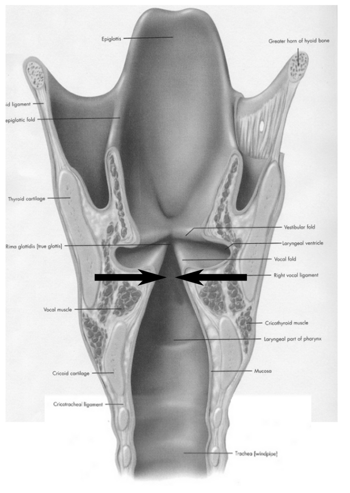 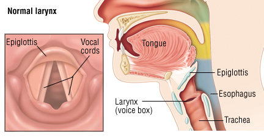3B Scientific and Drugs.com
... a complicated geometry in a complicated system
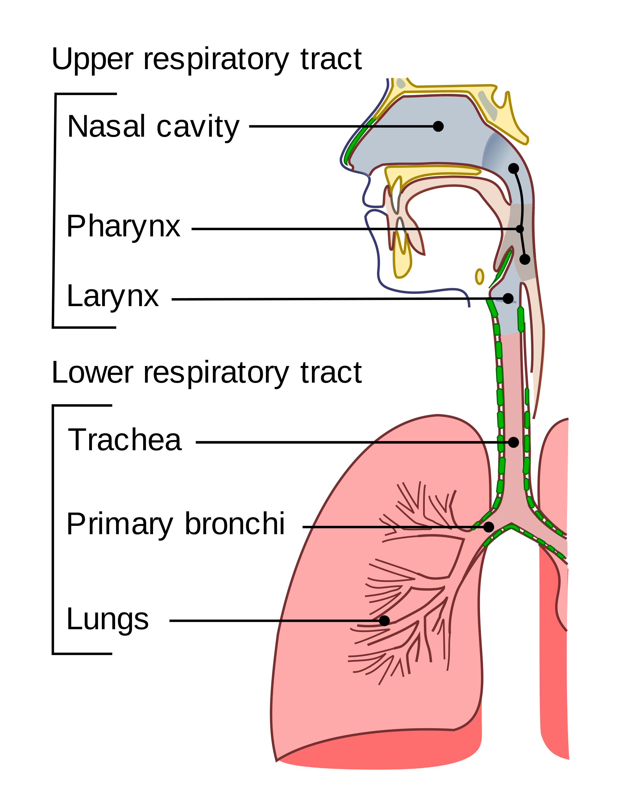cancer.gov
Why?
Understand exercise-induced laryngeal obstructionChanges in epiglottic fold geometry leading to breathing problems EILO is often misdiagnosed as asthma
The team
- Alexander Lundervold, Dept. of Computing, Mathematics and Physics, Faculty of Engineering, Bergen University College (HiB)
- Ola Drange Røksund, Faculty of health and social sciences, Bergen University College, and Haukeland University Hospital
- The larynx working group based at Haukeland University Hospital (Halvorsen, Heimdal, Røksund, Thorsen)
- Eric Strand, NMBU (Norwegian School of Veterinary Science)
- Constanze Fintl, NMBU
- Zoe Fretheim, NMBU
[Click on image]
Have access to high-quality equine image data and physiological measurements
The approach
- DOMAIN: obtain a realistic 3D geometry
- BOUNDARY CONDITIONS: images; lab measurements
- PHYSICS: Navier-Stokes, fluid-structure interaction, turbulence
- MESH: design appropriate mesh
- SOLVE: use suitable numerical methods
- VALIDATE: Compare with lab measurements (e.g. pressure)
- Iterate

Project, part 0
Use simplified geometries to study the phenomenon
[Click on image]
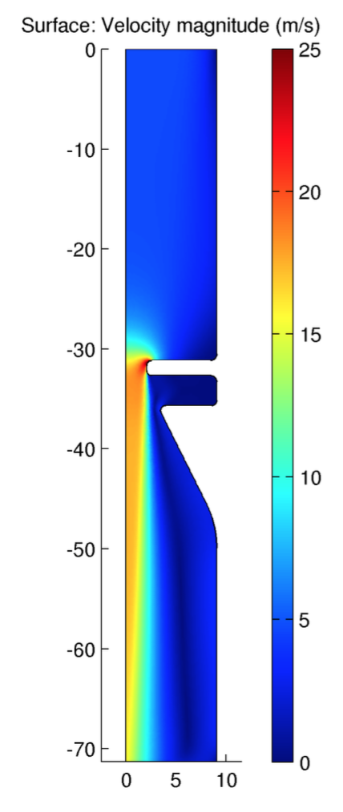 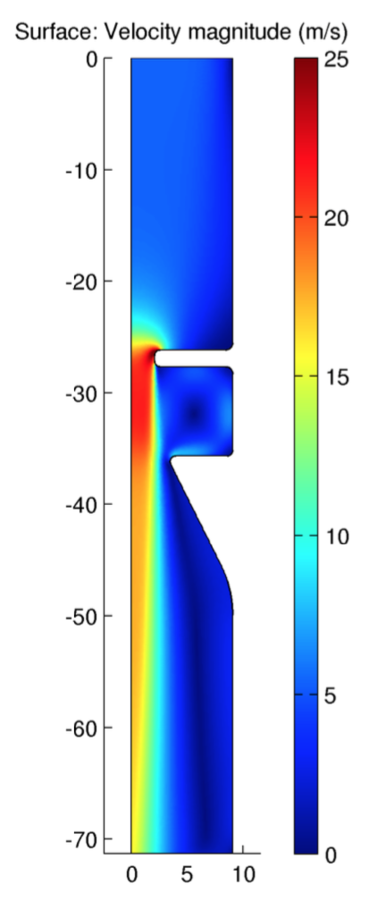 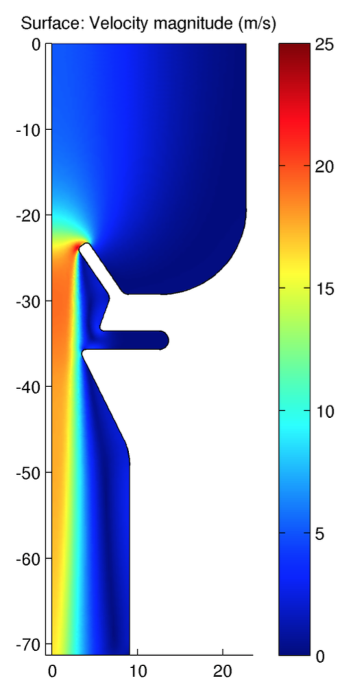 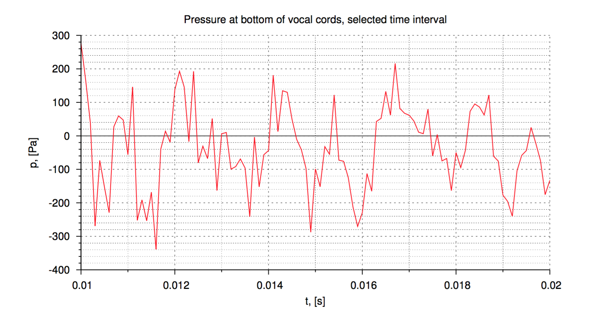
Results from the MSc. thesis of U. Lacis, Umeå University, used for illustration
Computational fluid dynamics is difficult. Many open questions, and reproducing and validating other's results is useful. Investigate the effect of assumptions and parameter choices.
Part 1, Step 1:
a more realistic geometry
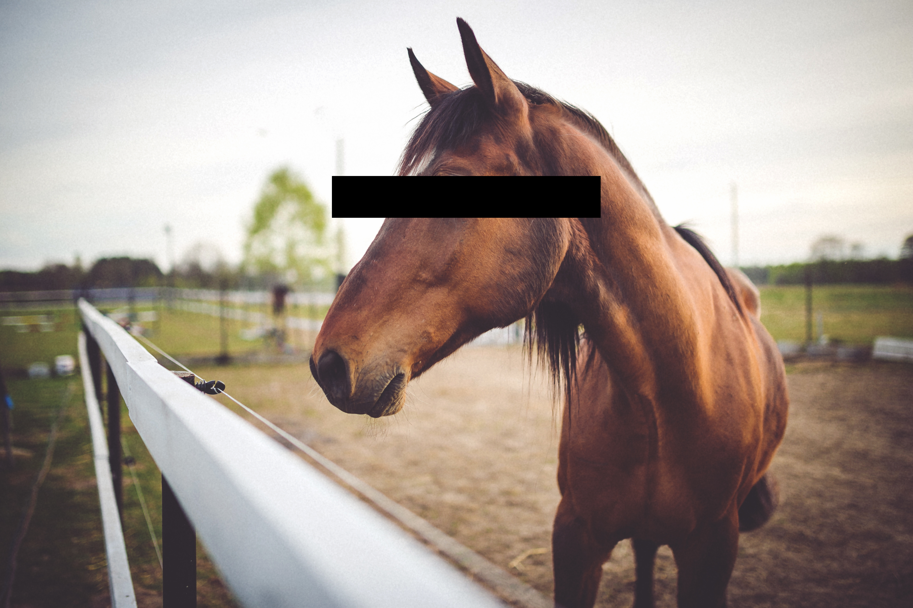
A former elite thoroughbred racehorse that won numerous high profile races.
Died after an operation. Larynx excised and imaged.
Segmentation: Locating and separating structures of interest in an image.
Many tools and techniques available. E.g. ITK-SNAP can do semiautomatic segmentation based on active contours.
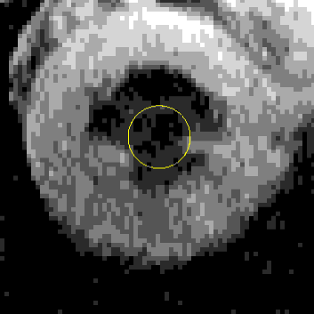iAC, Johns Hopkins UniversityMany open questions related to segmentation to be investigated
For illustration only. Manual and automatic simplification and modifications to be done.
3D printer and wind-tunnel
After smoothing and other necessary changes:
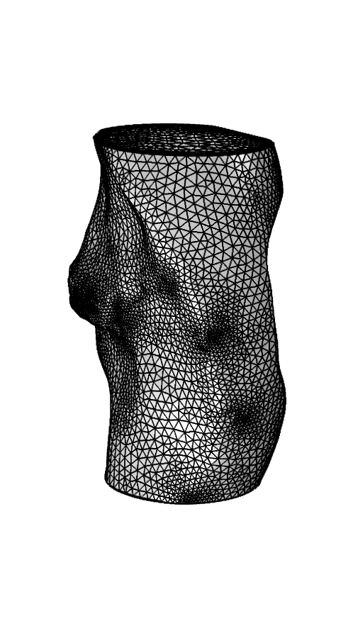
Aim to reproduce results from e.g. Bakhshaee, Computational models of human and animal larynx and vocal folds, PhD thesis, McGill University, 2013
The physics
Fluid flow: Navier-Stokes. Turbulent flow.
Structural mechanics: pressure and viscous forces
Fluid-structure interaction: deformable and moving structures interacting with internal fluid flow
{kind=link}
Next steps:
Simulation and validation
Next time!
Similar simulations have been performed. Compare, validate and extend.
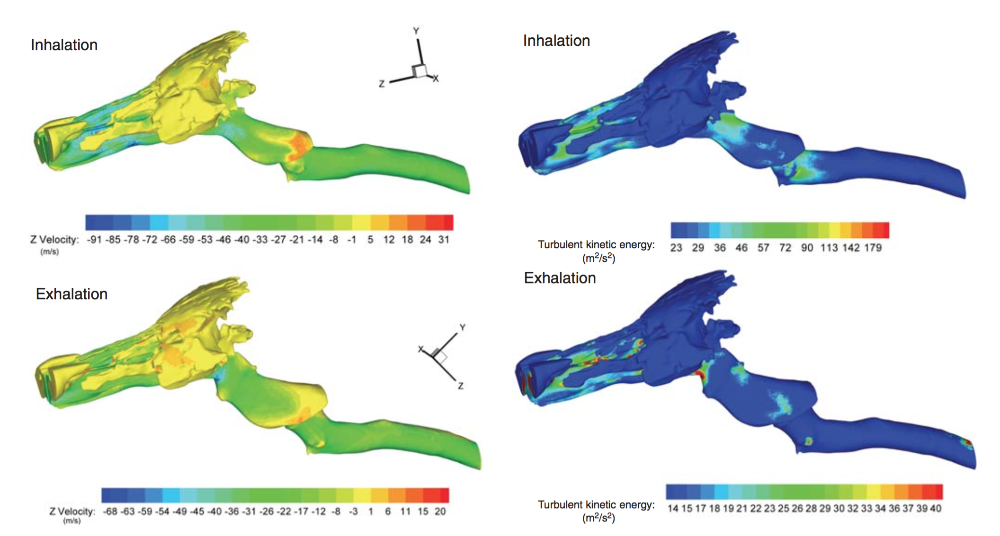Rakesh et.al. Development of equine upper airway fluid mechanics model for Thoroughbred racehorses. Equine Veterinary Journal, 2008
Outlook
- Predict the effect of abnormal anatomy or function
- Predict the effect of surgery and medication
- Expand to other organ systems